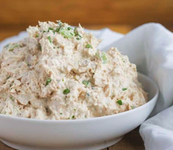

Tuna Salad

Description
Tuna salad is, in my opinion, one of the best salads known to man. The thing is, there's a million and one ways to make it. Some of which are extremely complex.
Well, you know me... I'm all about keeping it simple. And my tuna salad recipe is no different. Check it out below.
Ingredients
- Two 8oz cans of albacore tuna (drained)
- Half a cup of real mayonnaise
- One tsp of soy sauce
- One tbsp of yellow mustard
- Quarter cup of dill relish
Directions
This is where the simplicity comes in...
- Combine all ingredients into a medium-sized mixing bowl
- Stir thoroughly until all ingredients are combined evenly
- Serve with crackers or use as a sandwich spread!